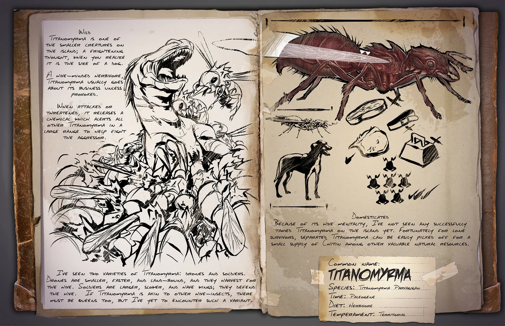

Primera aparición: Temporada 5 - capítulo 14
Tamaño (adulto): Longitud - 1 metros, Altura - 30 centímetros
Hábitat: LA ISLA, EL CENTRO, SCORCHED, VALGUERO, RAGNAROK, FJOLDUR, GENESIS
Dieta: Carnívora
Comportamiento: Agresivo
Nivel de amenaza: Baja, media en grupo
Nivel de pelea: 325